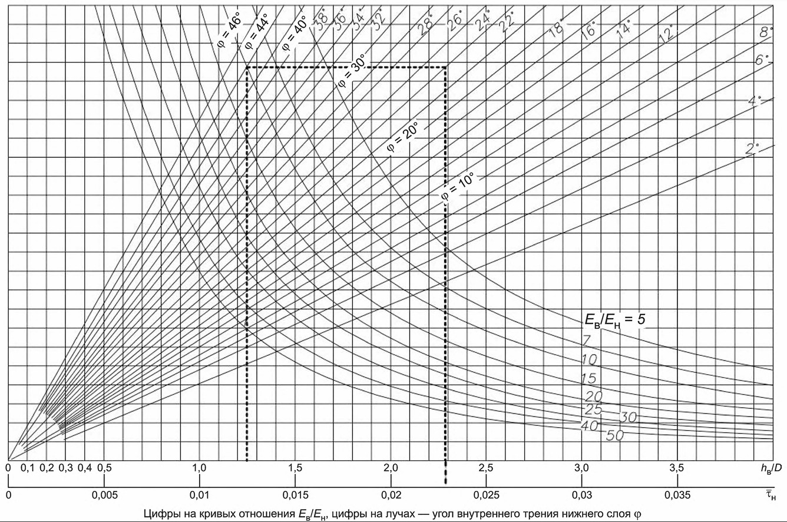

🟥 Красная линия: показывает значение h_в/D (от 0 до 4) с точностью до сотых (2 знака).
🟩 Зеленая линия: показывает значение τ_н (от 0 до 0.40) с точностью до 5 знаков после запятой.
🟦 Синяя линия: вспомогательная горизонтальная линия (без значений).
